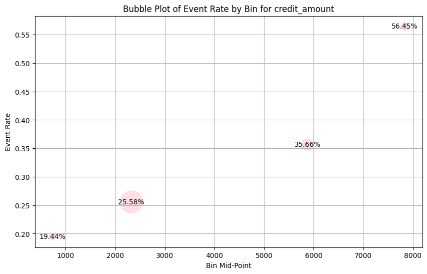

import pandas as pd
from sklearn.linear_model import LogisticRegression
from sklearn.metrics import roc_auc_score
# Tải dữ liệu German Credit
url = "https://archive.ics.uci.edu/ml/machine-learning-databases/statlog/german/german.data"
column_names = ["existing_account", "duration_month", "credit_history", "purpose", "credit_amount",
"savings_account", "employment_since", "installment_rate", "personal_status_sex", "other_debtors",
"present_residence", "property", "age", "other_installment_plans", "housing", "existing_credits",
"job", "people_liable", "telephone", "foreign_worker", "credit_risk"]
df = pd.read_csv(url, sep=" ", header=None, names=column_names)
# Chuyển đổi target thành nhị phân
df['credit_risk'] = df['credit_risk'].map({1: 0, 2: 1})from sklearn.base import TransformerMixin, BaseEstimator
import logging
from optbinning import BinningProcess
import matplotlib.pyplot as plt
class InformationValues(BaseEstimator, TransformerMixin):
def __init__(self, monotonic_trend='auto_asc_desc', max_n_bins=5, prebinning_method='cart', min_event_rate_diff=0.0002):
self.monotonic_trend = monotonic_trend
self.max_n_bins = max_n_bins
self.prebinning_method = prebinning_method
self.min_event_rate_diff = min_event_rate_diff
self.binning_process = None
self.t_iv = None
self.t_woe = None
def fit(self, X, y):
self.feats = X.columns.tolist()
self.cat_feats = X.select_dtypes(include=['object']).columns.tolist()
# self.num_feats = list(set(self.feats) - set(self.cat_feats))
self.num_feats = [item for item in self.feats if item not in self.cat_feats]
logging.info('Processing Information Value, Total features {}. Categorical features {}. Numeric features {}'.format(len(self.feats), len(self.cat_feats), len(self.num_feats)))
# Set the binning fit parameters for each feature
_binning_fit_params = {}
for fs in self.feats:
_binning_fit_params[fs] = {'monotonic_trend':self.monotonic_trend,
'max_n_bins': self.max_n_bins,
'prebinning_method':self.prebinning_method,
'min_event_rate_diff':self.min_event_rate_diff}
# Initialize the BinningProcess with the specified variables and fit parameters
_binning_process = BinningProcess(variable_names = self.feats
,categorical_variables = self.cat_feats
, binning_fit_params=_binning_fit_params)
# Transform the training data using the BinningProcess
_binning_process.fit(X, y)
self.binning_process = _binning_process
# Create a list to store woe tables and iv tables
t_iv, t_woe = [], []
for fs in self.binning_process.summary().name:
binning_table = self.binning_process.get_binned_variable(fs).binning_table
tbl = binning_table.build().assign(variable = fs)
# Get woe table
t_woe.append(tbl)
# Get iv table
tbl_iv = tbl[tbl.index == 'Totals'][['variable', 'IV']]
t_iv.append(tbl_iv)
# Concatenate the list of woe tables and iv tables
self.t_woe = pd.concat(t_woe, axis=0)
self.t_iv = pd.concat(t_iv, axis=0)
return self
def transform(self, X):
X_woe = self.binning_process.transform(X)
return X_woe
def get_feature_names_in(self):
return self.feats
def get_feature_names_out(self):
return self.feats
def get_table_woe(self):
return self.t_woe
def get_table_iv(self):
return self.t_iv
# New method to retrieve binning table for a specific feature
def get_binning_table(self, feature_name):
if feature_name in self.feats:
binning_table = self.binning_process.get_binned_variable(feature_name).binning_table
return binning_table.build()
else:
raise ValueError(f"Feature '{feature_name}' not found in the data.")
def plot_bubble_feature(self, feature_name):
if feature_name not in self.feats:
raise ValueError(f"Feature '{feature_name}' not found in the data.")
binning_table = self.get_binning_table(feature_name)
# Extract necessary data for plotting
plot_data = binning_table[['Bin', 'Count', 'Event rate']].copy()
# Handle non-numeric and special bins correctly
def calculate_midpoint(bin_range):
try:
bounds = bin_range.strip('[]()').split(', ')
if bounds[0] == '-inf':
lower = float('-inf')
else:
lower = float(bounds[0])
if bounds[1] == 'inf':
upper = float('inf')
else:
upper = float(bounds[1])
return (lower + upper) / 2 if lower != float('-inf') and upper != float('inf') else lower if upper == float('inf') else upper
except:
return None # Return None for 'Special' or 'Missing' categories
plot_data['MidPoint'] = plot_data['Bin'].apply(calculate_midpoint)
plot_data = plot_data.dropna(subset=['MidPoint']) # Remove rows where midpoint is None
plot_data['BubbleSize'] = plot_data['Count'] / plot_data['Count'].max() * 1000
plt.figure(figsize=(10, 6))
plt.scatter(plot_data['MidPoint'], plot_data['Event rate'], s=plot_data['BubbleSize'], alpha=0.5, color='pink')
for index, row in plot_data.iterrows():
plt.text(row['MidPoint'], row['Event rate'], f"{row['Event rate'] * 100:.2f}%", ha='center', va='center')
plt.xlabel('Bin Mid-Point')
plt.ylabel('Event Rate')
plt.title(f'Bubble Plot of Event Rate by Bin for {feature_name}')
plt.grid(True)
plt.show()import pandas as pd
from optbinning import BinningProcess
from sklearn.linear_model import LogisticRegression
from sklearn.model_selection import train_test_split
from sklearn.metrics import roc_auc_score
# Assuming you already have the 'df' data loaded
# Initialize the custom transformer
iv_transformer = InformationValues(monotonic_trend='auto_asc_desc', max_n_bins=5, prebinning_method='cart')
# Split the data
X = df.drop('credit_risk', axis=1)
y = df['credit_risk']
X_train, X_test, y_train, y_test = train_test_split(X, y, test_size=0.3, random_state=42)
# Fit the transformer on the training data
iv_transformer.fit(X_train, y_train)
# Transform both training and test data using WoE
X_train_woe = iv_transformer.transform(X_train)
X_test_woe = iv_transformer.transform(X_test)
# Fit the logistic regression model
logreg = LogisticRegression(solver='liblinear')
logreg.fit(X_train_woe, y_train)
# Predict and evaluate the model
y_pred_prob = logreg.predict_proba(X_test_woe)[:, 1]
roc_auc = roc_auc_score(y_test, y_pred_prob)
print(f"ROC AUC Score: {roc_auc:.4f}")
# Get WoE and IV tables
woe_table = iv_transformer.get_table_woe()
iv_table = iv_transformer.get_table_iv()
print("Information Value Table")
print(iv_table)ROC AUC Score: 0.8022
Information Value Table
variable IV
Totals existing_account 0.587325
Totals duration_month 0.257173
Totals credit_history 0.368192
Totals purpose 0.229094
Totals credit_amount 0.182718
Totals savings_account 0.162927
Totals employment_since 0.066179
Totals installment_rate 0.011137
Totals personal_status_sex 0.045733
Totals other_debtors 0.008107
Totals present_residence 0.007464
Totals property 0.145759
Totals age 0.157060
Totals other_installment_plans 0.034371
Totals housing 0.110042
Totals existing_credits 0.016714
Totals job 0.009923
Totals people_liable 0.000045
Totals telephone 0.006171
Totals foreign_worker 0.000000iv_transformer.get_binning_table('credit_amount')| Bin | Count | Count (%) | Non-event | Event | Event rate | WoE | IV | JS | |
|---|---|---|---|---|---|---|---|---|---|
| 0 | (-inf, 735.50) | 36 | 0.051429 | 29 | 7 | 0.194444 | 0.567276 | 0.014505 | 0.001789 |
| 1 | [735.50, 3913.50) | 473 | 0.675714 | 352 | 121 | 0.255814 | 0.213731 | 0.029486 | 0.003679 |
| 2 | [3913.50, 7839.50) | 129 | 0.184286 | 83 | 46 | 0.356589 | -0.263911 | 0.013473 | 0.001679 |
| 3 | [7839.50, inf) | 62 | 0.088571 | 27 | 35 | 0.564516 | -1.113621 | 0.125254 | 0.014895 |
| 4 | Special | 0 | 0.000000 | 0 | 0 | 0.000000 | 0.0 | 0.000000 | 0.000000 |
| 5 | Missing | 0 | 0.000000 | 0 | 0 | 0.000000 | 0.0 | 0.000000 | 0.000000 |
| Totals | 700 | 1.000000 | 491 | 209 | 0.298571 | 0.182718 | 0.022042 |
iv_transformer.plot_bubble_feature('credit_amount')